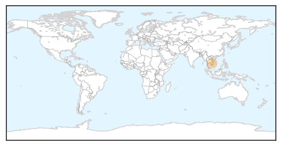

Pertussis
30-Day Web Trend
0 alerts, 0 warnings

30-Day Twitter Trend
0 alerts, 0 warnings

Article Locations

Article Confidences
Top Articles:
- 0.987
- News Scan for Jun 13, 2014
- 0.986
- Whooping cough epidemic declared in California
- 0.977
- California declares whooping cough epidemic
- 0.915
- California reports whooping cough epidemic
- 0.838
- Whooping Cough In California Soars To Epidemic Levels « CBS Los Angeles
- 0.829
- Whooping cough reaches epidemic level in California
- 0.538
- Vaccination concerns grow for adults who have contact with newborns
Top Tweets:
-
No tweets found for Jun 13, 2014
Dengue Fever
30-Day Web Trend
1 alerts, 0 warnings
30-Day Twitter Trend
2 alerts, 0 warnings

Article Locations
Article Confidences

Top Articles:
Top Tweets:
-
No tweets found for Jun 13, 2014